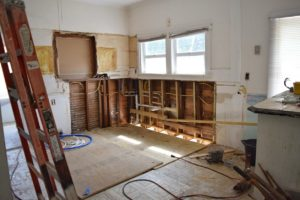
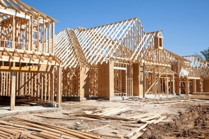

What can Shamrock do for you?
Home Renovation
If you are looking to renovate your home, then you have come to the right place. Normally, our crew works on Wal-Marts, but each of them is a trained carpenter and can remodel, renovate, and add onto your lovely home. Contact us to get started on your new dream home renovation!
Residential & Commercial Construction
Looking to start a business or build your dream home from scratch? Are you a residential developer looking to build a neighborhood? Our skilled carpenters can accomplish whatever your heart desires for your business or home. Contact us today to get a quote! Quality guaranteed!
Wal-Mart/Wal-Mart affiliate Construction

Shamrock Builders and Renovators has been building for Wal-Mart and its affiliates for as long as our business has been running. We have built locations all over the United States and are always ready to build more! If you are looking for a crew that can build you a quality structure on-time and under-budget, then Shamrock Builders and Renovators is the company for you. Contact us today and we can get you a quote for your next project!